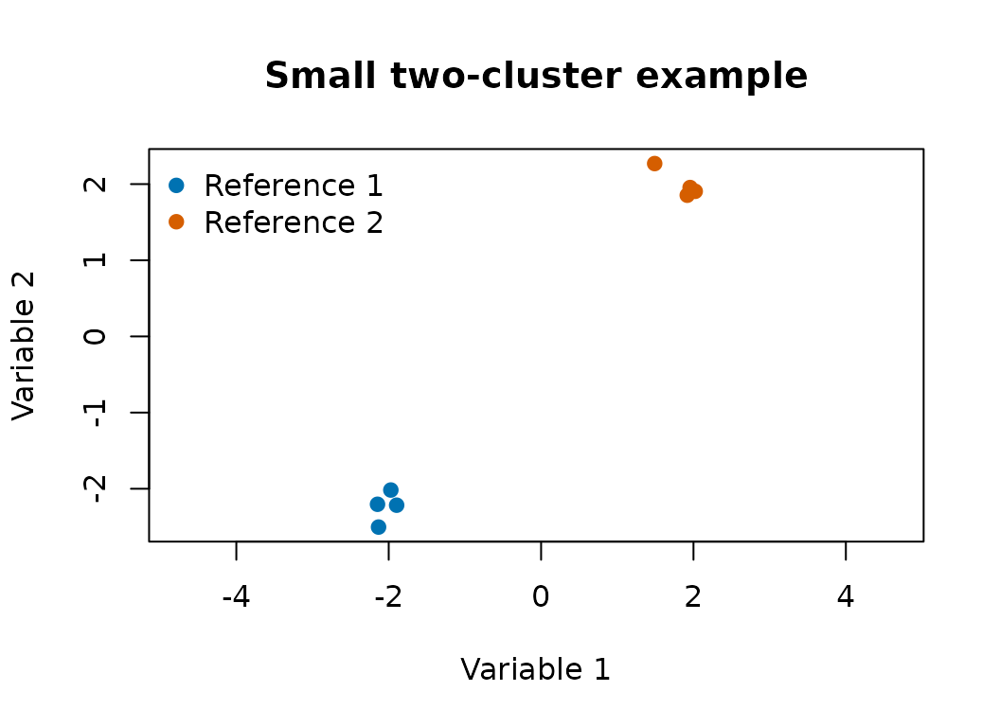
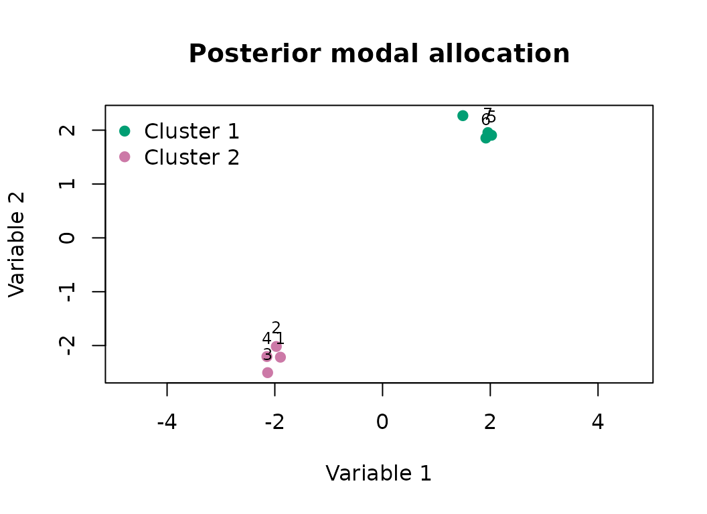

bpgmm fits Bayesian parsimonious Gaussian mixture models
for model-based clustering. It targets three posterior inference goals
described by Lu, Li, and Love (2021): the partition of observations, the
number of clusters, and the cluster covariance structure.
The vignettes have separate roles:
| Article | Use it for |
|---|---|
data-preparation |
matrix orientation, scaling, and choosing m_range and
q_new
|
model-and-sampler |
formulas from the paper and their package arguments |
examples |
inspecting one fitted object |
model-selection |
RJMCMC summaries for and covariance model |
variable-prioritization |
exploratory variable rankings from posterior output |
posterior-diagnostics |
independent chains, traces, and co-clustering |
Fit a model
Input data should be a numeric matrix with variables in rows and
observations in columns. The small example below has two variables and
eight observations. The example is short so the vignette runs quickly;
applied analyses should use larger burn and
niter values.
library(bpgmm)
#> bpgmm 1.3.2 loaded. If you use bpgmm in published work, please cite it with citation("bpgmm").
set.seed(2026)
X <- cbind(
matrix(rnorm(8, mean = -2, sd = 0.2), nrow = 2),
matrix(rnorm(8, mean = 2, sd = 0.2), nrow = 2)
)
known_labels <- rep(1:2, each = 4)The scatter plot gives a direct check of the simulated partition. Each point is one observation, and the colors show the reference labels used later for the ARI calculation.
plot(
X[1, ], X[2, ],
col = c("#0072B2", "#D55E00")[known_labels],
pch = 19,
xlab = "Variable 1",
ylab = "Variable 2",
main = "Small two-cluster example",
asp = 1
)
legend(
"topleft",
legend = paste("Reference", sort(unique(known_labels))),
col = c("#0072B2", "#D55E00"),
pch = 19,
bty = "n"
)
fit_log <- capture.output({
fit <- pgmm_rjmcmc(
X = X,
m_init = 2,
m_range = c(1, 3),
q_new = 1,
burn = 1,
niter = 3,
constraint = model_to_constraint("UUU"),
m_step = 0,
v_step = 0,
verbose = FALSE
)
})
tail(fit_log, 1)
#> character(0)The call fixes and the covariance model so the example is fast. The important arguments are:
-
m_initis the initial number of clusters. -
m_rangeis the allowed range for the number of clusters. -
q_newis the number of latent factors for a new cluster. -
constraintselects the starting covariance model. -
m_step = 1allows RJMCMC updates for the number of clusters. -
v_step = 1allows RJMCMC updates across covariance-constraint models.
Summarize posterior samples
summary <- summarize_pgmm_rjmcmc(fit, true_cluster = known_labels)
summary$allocation
#> [1] 2 2 2 2 1 1 1 1
summary$n_clusters
#>
#> 2
#> 3
summary$n_constraints
#>
#> UUU
#> 3
summary$ari
#> [1] 1If a reference partition is available, pass it as
true_cluster to calculate the adjusted Rand index.
The summary allocation can be plotted back on the original coordinates. This plot is a first check before longer chains and convergence diagnostics.
plot(
X[1, ], X[2, ],
col = c("#009E73", "#CC79A7", "#E69F00")[summary$allocation],
pch = 19,
xlab = "Variable 1",
ylab = "Variable 2",
main = "Posterior modal allocation",
asp = 1
)
text(X[1, ], X[2, ], labels = seq_along(summary$allocation), pos = 3, cex = 0.75)
legend(
"topleft",
legend = paste("Cluster", sort(unique(summary$allocation))),
col = c("#009E73", "#CC79A7", "#E69F00")[sort(unique(summary$allocation))],
pch = 19,
bty = "n"
)
Common early mistakes
Common early problems are:
-
Xis accidentally supplied as observations by variables instead of variables by observations; - variables with very different measurement scales are not standardized;
-
m_initis outsidem_range; -
q_newis too large for a small number of variables; -
m_stepandv_stepare left at zero when model selection is desired.
Naming convention
Starting with version 1.2.0, the public API uses snake_case names
throughout. Use pgmm_rjmcmc(),
summarize_pgmm_rjmcmc(), and snake_case argument names such
as m_init, m_range, and
q_new.
Citation
If you use bpgmm in published work, please cite the
package and the methodology paper:
citation("bpgmm")
#> To cite package 'bpgmm' in publications use:
#>
#> Lu X, Li Y, Love T (2021). On Bayesian Analysis of
#> Parsimonious Gaussian Mixture Models. Journal of
#> Classification, 38, 576-593. doi:10.1007/s00357-021-09391-8
#>
#> A BibTeX entry for LaTeX users is
#>
#> @Article{,
#> title = {On Bayesian Analysis of Parsimonious Gaussian Mixture Models},
#> author = {Xiang Lu and Yaoxiang Li and Tanzy Love},
#> journal = {Journal of Classification},
#> year = {2021},
#> volume = {38},
#> pages = {576--593},
#> doi = {10.1007/s00357-021-09391-8},
#> }Lu, X., Li, Y., & Love, T. (2021). On Bayesian Analysis of Parsimonious Gaussian Mixture Models. Journal of Classification, 38, 576-593. https://doi.org/10.1007/s00357-021-09391-8